46 Intercambio de gases
993
CONCEPTOS CLAVE
46.1 El aire tiene una mayor concentración de oxígeno molecular que el agua y los animales requieren menos energía para mover aire que agua sobre una superfi cie de intercambio de gases; no obstante, los animales que respiran aire deben contar con adaptaciones que reduzcan la pérdida de agua de manera que sus superfi cies respiratorias no se sequen. 46.2 Las adaptaciones para el intercambio de gases incluyen una superfi cie corporal delgada y húmeda; branquias en animales acuáticos, y tubos traqueales y pulmones en animales terrestres. 46.3 En los mamíferos, el oxígeno y bióxido de carbono son intercambiados entre los alveolos y la sangre por difusión; la presión de un gas particular determina su dirección y razón de difusión. Los pigmentos respiratorios se combinan con el oxígeno y lo transportan; el bióxido de carbono es transportado principalmente como iones de bicarbonato. 46.4 Varios mecanismos de defensa protegen a los pulmones de sustancias dañinas que son inhaladas; humo de tabaco y otros contaminantes del aire son causas fundamentales de enfermedades, discapacidad y muerte.
L
a mayoría de los mamíferos requiere un abastecimiento continuo de oxígeno para efectuar la respiración celular. Las células cerebrales de los mamíferos, y algunas otras células, pueden resultar dañadas irreparablemente si su suministro de oxígeno es interrumpido durante sólo unos cuantos minutos. Para permanecer vivos, los animales deben tomar oxígeno y liberar el exceso de bióxido de carbono. El intercambio de gases entre un organismo y su entorno se denomina respiración . Hay dos fases en la respiración. Durante la respiración organísmica , el oxígeno del entorno es tomado por el animal y entregado a sus células individuales. Al mismo tiempo, el bióxido de carbono generado durante la respiración celular es expulsado hacia el entorno. La respiración celular aeróbica se lleva a cabo en las mitocondrias. El oxígeno es esencial porque funciona como el aceptor fi nal de electrones en la cadena de transporte electrónico mitocondrial (vea el capítulo 8). El bióxido de carbono es un producto residual metabólico de la respiración celular. Esponjas, hidras, platelmintos y muchos otros pequeños organismos acuáticos intercambian gases plenamente por simple difusión , el movimiento pasivo de partículas (átomos, iones o moléculas) de una región de mayor concentración a otra de menor concentración; es decir, hacia un gradiente de concentración más bajo (vea el capítulo 5). En estos animales, la mayoría de las células están en contacto directo con el entorno.
Ventilación. Los vertebrados terrestres, como el venado cola blanca ( Odocoileus virginanus ) ventilan sus pulmones al respirar aire.
Skip Moody/Dembinsky Photo Associates
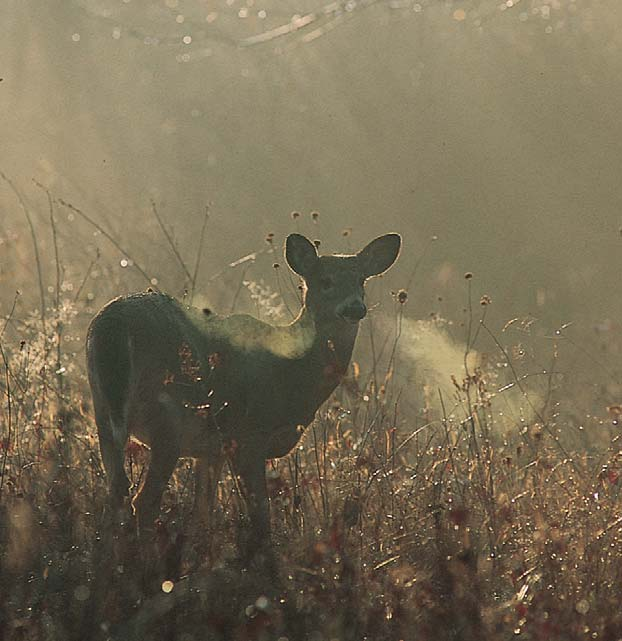
994 Capítulo 46
del cuerpo. Estas adaptaciones protegen a los pulmones de los efectos secante y enfriador del aire.
Repaso
■ ¿Cuáles son algunas ventajas del intercambio de gases en el aire respecto del intercambio de gases en el agua?
46.2 TIPOS DE SUPERFICIES RESPIRATORIAS
OBJETIVO DE APRENDIZAJE
2 Describir las siguientes adaptaciones para el intercambio de gases: superfi cie del cuerpo, tubos traqueales, branquias y pulmones.
Las estructuras respiratorias deben ser húmedas y también tener paredes delgadas a través de las cuales la difusión pueda ocurrir fácilmente. En los animales han evolucionado cuatro tipos principales de superfi cies respiratorias: la propia superfi cie corporal del animal, tubos traqueales, branquias y pulmones ( FIGURA 46-1 ). Algunos animales usan una combinación de estas adaptaciones. Las branquias están adaptadas para el intercambio de gases en el agua, mientras los tubos traqueales de los insectos y los pulmones de los vertebrados son estructuras respiratorias adaptadas para el intercambio de gases en el aire. Con la excepción importante de los tubos traqueales de los insectos, las estructuras respiratorias están provistas con abundantes vasos sanguíneos que facilitan el intercambio y transporte de los gases respiratorios. La mayoría de los animales llevan a cabo la ventilación ; es decir, mueven activamente el aire o el agua sobre sus superfi cies respiratorias. Si el aire o el agua que abastece de oxígeno a las células puede renovarse continuamente, se dispone de más oxígeno. Las esponjas usan sus fl agelos para establecer una corriente de agua a través de los canales de sus cuerpos. La mayoría de los peces tragan agua, que luego pasa por sus branquias. Los vertebrados terrestres tienen pulmones y respiran aire. Cuando los mamíferos respiran, el diafragma y otros músculos mueven aire hacia dentro y fuera de los pulmones.
La superfi cie del cuerpo puede ser adaptada para el intercambio de gases
El intercambio de gases ocurre a lo largo de toda la superfi cie del cuerpo en muchos animales, incluidos los moluscos nudibranquios, la mayoría de los anélidos y algunos anfi bios. Estos animales son pequeños, con una gran relación de área superfi cial a volumen. También tienen una tasa metabólica baja que requiere menores cantidades de oxígeno por célula. En los animales acuáticos, la superfi cie del cuerpo se mantiene húmeda por el agua circundante. En los animales terrestres, el cuerpo secreta fl uidos que mantienen húmeda su superfi cie. Muchos animales que intercambian gases a través de la superfi cie del cuerpo también tienen branquias o pulmones.
Los sistemas de tubos traqueales suministran aire directamente a las células
En insectos y algunos otros artrópodos (como quilópodos, diplópodos, algunos ácaros y algunas arañas), el sistema respiratorio es una red de tubos traqueales , también denominadas tráqueas ( FIGURA 46-2 ). Este sistema respiratorio muy efi caz suministra aire directamente a las células.
El oxígeno disuelto del agua circundante se difunde hacia las células, mientras el bióxido de carbono se difunde fuera de las células y hacia el agua. No se requieren estructuras respiratorias especializadas. En un animal que mida un poco más de 1 mm de espesor, el oxígeno no puede difundirse lo sufi cientemente rápido a través de capas de células para sustentar la vida. Estructuras respiratorias especializadas, como branquias o pulmones, entregan el oxígeno a las células o a un sistema de transporte. Estas estructuras también facilitan la expulsión del bióxido de carbono. Los animales con pulmones llevan a cabo ventilación al respirar aire (vea la fotografía). En muchos grupos de animales, incluidos los vertebrados, los sistemas respiratorios y circulatorios están conectados funcionalmente. Trabajan juntos para proveer consumo y transporte de oxígeno efi cientes. Dichos sistemas aportan sufi ciente oxígeno para soportar altas tasas metabólicas. Como se verá, en los artrópodos han evolucionado diferentes estrategias para el intercambio de gases. En este capítulo se analizarán las adaptaciones para el intercambio de gases en aire y agua, y se describirán varios tipos de superfi cies respiratorias. Luego la atención se dirigirá a la estructura y función del sistema respiratorio de los mamíferos. El capítulo termina con un análisis de los efectos de respirar aire contaminado, incluido el humo del cigarro.
46.1 ADAPTACIONES PARA EL INTERCAMBIO DE GASES EN AIRE O AGUA
OBJETIVO DE APRENDIZAJE
1 Comparar las ventajas y desventajas del aire y el agua como medios para el intercambio de gases, y describir las adaptaciones para el intercambio de gases en el aire.
El intercambio de gases en el aire tiene ciertas ventajas sobre el intercambio de gases en el agua. El aire contiene una concentración mucho mayor de oxígeno molecular (por lo menos 20 veces más) que el agua. Además, el oxígeno se difunde alrededor de 10,000 veces más rápido en el aire que en el agua. Otra ventaja es que se requiere menos energía para mover aire que para mover agua sobre una superfi cie de intercambio de gases porque el aire es menos denso y menos viscoso. Un mamífero usa menos de 2% de su presupuesto energético para respirar, en comparación con un pez que debe gastar hasta 20% de su energía para obtener su oxígeno del agua. El intercambio de gases en el aire presenta un desafío mayúsculo: la amenaza de desecación. Los animales que respiran en el aire luchan continuamente contra la pérdida de agua. Las superfi cies respiratorias deben mantenerse húmedas porque el oxígeno y el bióxido de carbono están disueltos en el fl uido que irriga las células de estas superfi cies. Ya sea que un animal haga su casa en la tierra o en el agua, el intercambio de gases se lleva a cabo a través de una superfi cie húmeda. Han evolucionado adaptaciones que preservan húmedas las superfi cies respiratorias y minimizan la desecación. Por ejemplo, los pulmones de los vertebrados que respiran aire están situados profundamente en el cuerpo, sin estar expuestos como las branquias. El aire es humectado y llevado a la temperatura del cuerpo a medida que pasa por las húmedas vías respiratorias superiores. El aire exhalado debe pasar de nuevo por estas vías (lo que es una oportunidad para retener agua) antes de salir
Intercambio de gases 995
Pez
Pez dipneo
Mamífero
Necturo
Branquias
Araña
Pulmón en libro
Branquias externas
Branquias internas
Lombriz de tierra
Saltamontes
Superficie del cuerpo. Algunos animales pequeños multicelulares intercambian gases a través de la superficie del cuerpo.
Pulmones. Los pulmones son adaptaciones para el intercambio de gases terrestre.
Branquias. La mayoría de los animales acuáticos intercambian gases a través de las branquias, estructuras delgadas que se extienden desde la superficie del cuerpo. Pueden ser internas o externas.
Tubos traqueales. Los insectos y algunos otros artrópodos intercambian gases a través de un sistema de tubos traqueales o tráqueas.
FIGURA 46-1 Adaptaciones para el intercambio de gases
El efi ciente sistema de tubos traqueales de los insectos suministra aire directamente a las células.
Espiráculo
Tubo traqueal
O 2
CO 2
Espiráculo
Músculo
Célula epitelial
100 μ m
Tubo traqueal
Traqueolo
Micrografía de la tráquea de un grillo real. Las arrugas forman parte de una larga espiral que envuelve el tubo, reforzando la pared traqueal de manera semejante a como un resorte refuerza las mangueras de plástico de muchas aspiradoras. La pared traqueal está compuesta de quitina.
Ubicación de los espiráculos y tubos traqueales. El aire entra al sistema de tubos traqueales a través de aberturas denominadas espiráculos.
Estructura y función de los tubos traqueales. El aire pasa a través de un sistema de tubos traqueales ramificados que conducen el oxígeno a todas las células del insecto.
Courtesy of Dr. James L. Nation and Stain Technology, Vol. 58, 1983
FIGURA 46-2 Intercambio de gases en insectos: tubos traqueales
PUNTO CLAVE
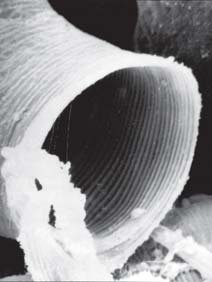
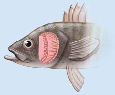
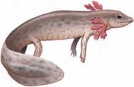
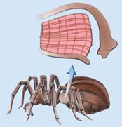
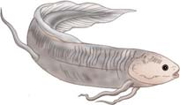
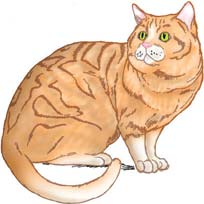
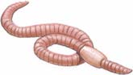
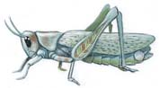
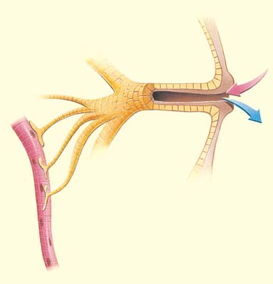
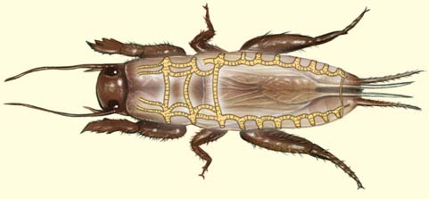
996 Capítulo 46
el agua disminuiría a medida que aumentara la concentración en la sangre. Cuando las concentraciones en ambos líquidos fueran iguales, se alcanzaría el equilibrio y la difusión neta del oxígeno se detendría. Sólo alrededor de 50% del oxígeno disuelto en el agua podría difundirse en la sangre. Sin embargo, en el sistema de intercambio a contracorriente, la sangre baja en oxígeno entra en contacto con agua que está parcialmente carente de oxígeno. Luego, conforme la sangre circula por los capilares, se vuelve progresivamente más rica en oxígeno, pues entra en contacto con agua con una concentración cada vez más alta de dicho gas. Así, a todo lo largo de los capilares, el gradiente de difusión favorece el paso de oxígeno desde el agua hacia la branquia. Se mantiene una alta tasa de difusión, asegurando que un porcentaje muy alto (más de 80%) del oxígeno disponible en el agua se difunda hacia la sangre. El oxígeno y el bióxido de carbono no interfi eren entre sí en la difusión, y se difunden simultáneamente en direcciones opuestas. La razón es que el oxígeno está más concentrado fuera de las branquias que adentro, pero el bióxido de carbono está más concentrado dentro de las branquias que afuera. Así, el mismo mecanismo de intercambio a contracorriente que asegura la afl uencia efi caz de oxígeno también resulta en una contracorriente igualmente efi caz de bióxido de carbono.
Los vertebrados terrestres intercambian gases a través de los pulmones
Los pulmones son estructuras respiratorias que se desarrollan como crecimientos internos de la superfi cie corporal o desde la pared de una cavidad del cuerpo como la faringe (región de la garganta). Por ejemplo, los pulmones en libro de las arañas están rodeados por una bolsa de la pared abdominal. Estos pulmones constan de una serie de delgadas placas paralelas de tejido (como las páginas de un libro) llenas de hemolinfa (vea la fi gura 46-1d). Las placas de tejido están separadas por espacios de aire que reciben oxígeno desde el ambiente externo a través de un espiráculo. Un tipo de pulmones diferentes evolucionó en los caracoles de tierra y las babosas. (Estos moluscos terrestres carecen de branquias). El intercambio de gases se lleva a cabo a través de un pulmón, que es una región vascular del manto. La evidencia fósil sugiere que los primeros peces de aletas lobuladas tenían pulmones semejantes a los de los modernos peces dipnoos (con pulmones). El pez dipneo australiano puede usar sus branquias o sus pulmones, dependiendo de las condiciones en su entorno. Las branquias de los peces dipnoos o pulmonados africanos y sudamericanos se degeneran con la edad, por lo que los adultos deben subir a la superfi cie e intercambiar gases totalmente a través de sus pulmones. Algunos paleontólogos suponen que todos los primeros peces óseos tenían pulmones o estructuras semejantes a éstos. La mayoría de los modernos peces óseos no tienen pulmones, pero casi todos cuentan con vejigas natatorias (vea el capítulo 32). Al ajustar la cantidad de gas en su vejiga natatoria, el pez puede controlar su fl otabilidad. La mayoría de los anfi bios tienen pulmones ( FIGURA 46-4 ). No obstante, casi todo su intercambio de gases se lleva a cabo a través de la superfi cie del cuerpo. Los pulmones de las salamandras son dos largos sacos simples provistas de abundantes capilares. Las ranas y los sapos tienen crestas que contienen tejido conectivo en el interior de los pulmones, lo que incrementa la superfi cie respiratoria. Algunos anfi bios no tienen pulmones. Por ejemplo, entre las salamandras apulmonadas (sin pulmones) el intercambio de gases se realiza a través de la delgada piel húmeda y de las húmedas paredes vasculares de la boca y la faringe.
El aire entra en los tubos traqueales a través de una serie de hasta 20 aberturas diminutas denominadas espiráculos a lo largo de la superfi cie del cuerpo. En algunos insectos, especialmente grandes y activos, los músculos ayudan a ventilar las tráqueas al bombear aire hacia dentro y hacia fuera de los espiráculos. Por ejemplo, el saltamontes aspira aire a través del primer par de espiráculos cuando el abdomen se expande. Luego, el abdomen se contrae, obligando al aire a salir a través de los últimos seis pares de espiráculos. Una vez dentro del cuerpo, el aire pasa a través de un sistema de tubos traqueales ramifi cados que se extienden a todas las partes del animal. Los tubos traqueales terminan en microscópicos traqueolos llenos de fl uido. Entre este fl uido y las células del cuerpo se lleva a cabo un intercambio de gases. El sistema traqueal proporciona sufi ciente oxígeno para resistir las altas tasas metabólicas requeridas por muchos insectos.
Las branquias son las superfi cies respiratorias en muchos animales acuáticos
Las branquias , que se encuentran principalmente en animales acuáticos, son estructuras delgadas que se extienden desde la superfi cie del cuerpo. Están sostenidas por la fuerza boyante del agua, pero tienden a colapsarse en el aire. En muchos animales, la superfi cie exterior de las branquias está expuesta al agua, mientras el lado interior está en contacto estrecho con redes de vasos sanguíneos. Las estrellas de mar y los erizos marinos tienen branquias dérmicas que se proyectan desde la pared del cuerpo. Sus células epidérmicas ciliadas ventilan las branquias al agitar una corriente de agua sobre ellas. Entre el agua y el fl uido celómico dentro del cuerpo se lleva a cabo el intercambio de gases por difusión a través de las branquias. En algunos anélidos, moluscos acuáticos, crustáceos, peces y anfi bios se encuentran varios tipos de branquias, las de los moluscos están plegadas, ofreciendo una gran superfi cie para la respiración. En almejas, otros moluscos bivalvos y en cordados simples, las branquias también pueden estar adaptadas para atrapar y clasifi car alimentos. El latido rítmico de los cilios agita el agua sobre el área de las branquias y del agua se fi ltra la comida mientras ocurre el intercambio de gases. En los moluscos, el intercambio de gases también se lleva a cabo a través del manto. En los cordados, las branquias suelen ser internas. Una serie de hendiduras perfora la faringe y las branquias se encuentran a lo largo de los bordes de estas hendiduras (vea la fi gura 32-4). En los peces óseos, las frágiles branquias están protegidas por una placa ósea externa, el opércu lo . En algunos peces, los movimientos de la mandíbula y el opérculo ayudan a bombear agua rica en oxígeno por la boca y a través de las branquias. El agua sale por las hendiduras branquiales. Cada branquia en el pez óseo consta de muchos fi lamentos branquiales , que constituyen una amplia superfi cie para el intercambio de gases ( FIGURAS 46-3a y b ). Los fi lamentos se extienden hacia el agua, que fl uye continuamente sobre ellos. Una red de capilares suministra sangre a los fi lamentos branquiales, facilitando la difusión de oxígeno y bióxido de carbono entre la sangre y el aire. Este sistema es en extremo efi caz porque la sangre fl uye en dirección opuesta al movimiento del agua. Esta disposición, denominada sistema de intercambio a contracorriente , maximiza la diferencia en concentración de oxígeno entre la sangre y el agua en toda el área en que ambas permanecen en contacto ( FIGURA 46-3c ). Si la sangre y el agua fl uyeran en la misma dirección; es decir, en intercambio concurrente , la diferencia entre las concentraciones de oxígeno en la sangre (baja) y agua (alta) al principio sería muy grande y muy pequeña al fi nal ( FIGURA 46-3d ). La concentración de oxígeno en
Intercambio de gases 997
implicados difi eren en los varios grupos de reptiles. El intercambio de gases no es muy efi caz y no suministra sufi ciente oxígeno para sustentar largos períodos de actividad. Las aves tienen el sistema respiratorio más efi ciente de cualquier vertebrado viviente. Al ser animales endotérmicos muy activos con altas tasas metabólicas, las aves requieren grandes cantidades de oxígeno para
En los reptiles se han desarrollado mejor los pulmones que en los anfi bios. La superfi cie respiratoria de cada pulmón está dividida en grandes sacos que aumentan la superfi cie para el intercambio de gases. En algunas tortugas, lagartos y cocodrilos, los pulmones tienen muchas subdivisiones que les otorgan una textura esponjosa. Los reptiles ventilan sus pulmones al introducir aire a los pulmones, pero los músculos
El fl ujo a contracorriente oxigena efi cazmente la sangre oxigenada que circula por los fi lamentos branquiales.
Arco branquial
Cámara opercular
Flujo de H 2 O
Arco branquial
Vasos sanguíneos
Vaso sanguíneo aferente (baja concentración de O 2 )
Vaso sanguíneo eferente (rico en O 2 )
CO 2
Filamentos branquiales
Ubicación de las branquias. Las branquias forman la pared lateral de la cavidad faríngea. Están bajo una placa ósea, el opérculo que no aparece en esta vista lateral.
Flujo a contracorriente. La sangre que entra en los capilares del filamento branquial es deficiente en oxígeno. La sangre fluye a través de los capilares en dirección opuesta a la que sigue el agua. Este sistema de intercambio a contracorriente carga eficazmente la sangre con oxígeno.
Branquias del salmón.
Flujo concurrente (hipotético). Si el sistema fuese concurrente; es decir, si la sangre fluyera a través de los capilares en la misma dirección que el flujo de agua, mucho menos del oxígeno disuelto en el agua podría difundirse hacia la sangre.
Estructura de una branquia. Cada branquia consta de un arco branquial cartilaginoso al que se unen dos filas de filamentos branquiales semejantes a hojas. Cada filamento branquial tiene muchas extensiones más pequeñas ricas en capilares. A medida que el agua fluye por el filamento branquial, el oxígeno pasa del agua a la sangre que circula por los capilares.
Bernard Photo Production/Animals Animals
FIGURA 46-3 Animada Intercambio de gases en peces óseos: branquias
PUNTO CLAVE
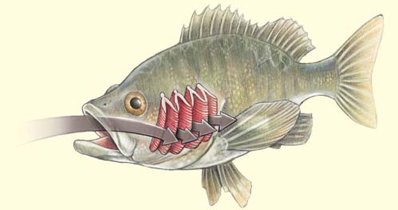
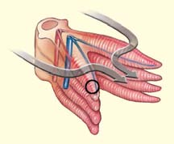
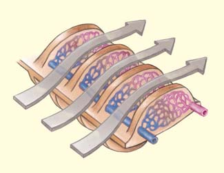
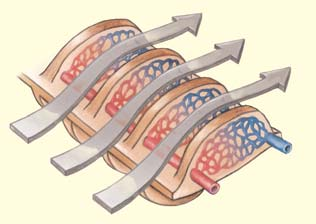
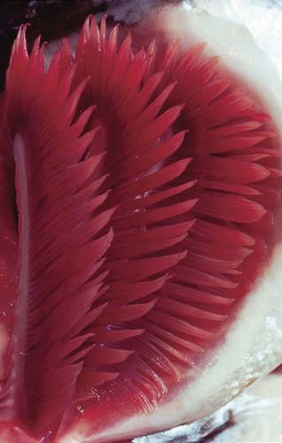
998 Capítulo 46
ellos circula aire continuamente. El intercambio de gases se lleva a cabo a través de las paredes, que son abundantes en capilares. Los pollos y otras aves de vuelo débil tienen alrededor de 400 parabronquios por pulmón; las palomas y otras aves de vuelo fuerte tienen alrededor de 1800 parabronquios por pulmón. La dirección del fl ujo sanguíneo en los pulmones es diferente de la que sigue la circulación de aire por los parabronquios. Esta disposición, semejante en principio al intercambio a contracorriente en las branquias de los peces, aumenta la cantidad de oxígeno que entra en la sangre. Sin embargo, en las aves los capilares están orientados en ángulos rectos con respecto a los parabronquios en lugar de a lo largo de su longitud. Es por esto que esta disposición se denomina corriente cruzada y no contracorriente.
Repaso
■ ¿Por qué son necesarias estructuras respiratorias especializadas en un renacuajo pero no en un platelminto?
■ ¿Cuál es la diferencia del intercambio de gases en los siguientes animales: (1) lombriz, (2) saltamontes, (3) pez, (4) ave?
■ ¿Cómo aumenta el sistema de intercambio a contracorriente la efi ciencia del intercambio de gases entre las branquias y la sangre de un pez?
46.3 EL SISTEMA RESPIRATORIO DE LOS MAMÍFEROS
OBJETIVOS DE APRENDIZAJE
3 Seguir el paso del oxígeno a través del sistema respiratorio humano desde las fosas nasales hasta los alveolos. 4 Resumir los mecanismos de la respiración en humanos, y describir el intercambio de gases en los pulmones y tejidos. 5 Resumir los mecanismos por los cuales el oxígeno y el bióxido de carbono son transportados en la sangre e identifi car los factores que determinan la curva de disociación de oxígeno-hemoglobina. 6 Describir la regulación de la respiración en humanos y resumir los efectos fi siológicos de la hiperventilación y la descompresión repentina cuando un buzo asciende a la superfi cie demasiado rápido desde aguas profundas.
El sistema respiratorio de los mamíferos consta de los pulmones y una serie de tubos por los cuales pasa el aire en su trayecto desde las fosas nasales hasta los pulmones y viceversa ( FIGURA 46-6 ). Los complicados pulmones tienen un área superfi cial enorme. Así como en todos los vertebrados, los sistemas respiratorio y circulatorio están conectados funcionalmente. El sistema circulatorio suministra sangre rica en oxígeno a todas las células del cuerpo. En las siguientes secciones, el enfoque se centra principalmente en el sistema respiratorio de los humanos.
Las vías respiratorias conducen aire hacia los pulmones
Una bocanada de aire entra al cuerpo por las narinas o fosas nasales y fl uye a través de las cavidades nasales . El aire que pasa por la nariz es fi ltrado, humedecido y llevado a la temperatura del cuerpo. Las cavidades nasales están revestidas por un epitelio húmedo y ciliado rico en vasos sanguíneos. Impurezas, bacterias y otras partículas extrañas inhaladas son atrapadas en la corriente de moco producida por las células dentro del epitelio y empujadas hacia la garganta por los cilios. De esta
mantener el vuelo y realizar otras actividades. Sus pequeños pulmones brillantes y rojos tienen extensiones (normalmente nueve) denominadas sacos de aire , que llegan a todas las partes del cuerpo e incluso se conectan con espacios de aire en algunos de los huesos. Los sacos de aire funcionan como fuelles, introduciendo aire al sistema. El colapso de los sacos de aire durante la exhalación obliga al aire a salir. El intercambio de gases no se lleva a cabo a través de las paredes de los sacos de aire. El sistema respiratorio de alto rendimiento de las aves está dispuesto de modo que el aire fl uye en una dirección a través de los pulmones y es renovado durante un proceso de dos ciclos ( FIGURA 46-5 ). El aire que entra al cuerpo pasa a los sacos de aire posteriores y a la parte de los pulmones más próxima a ellas. Los sacos de aire posteriores son depósitos para aire fresco. Cuando el ave exhala, el aire circula hacia los pulmones. En la segunda respiración, el aire fl uye de los pulmones hacia los sacos de aire anteriores. Por último, en la segunda exhalación, el aire sale del cuerpo a medida que otra bocanada de aire entra a los pulmones. Así, un ave obtiene aire fresco a través de sus pulmones por medio tanto de la inhalación como de la exhalación. En las aves, las ramas más estrechas de las vías respiratorias terminan en minúsculos tubos de pared delgada denominados parabronquios . En contraste con los alveolos pulmonares semejantes a sacos de los mamíferos, los parabronquios están abiertos por ambos extremos y por
Durante la evolución de los vertebrados, el área superfi cial del pulmón creció.
Pulmones de la salamandra Pulmones de la rana Pulmones del sapo
Pulmón de un reptil Pulmones de un ave
Al otro pulmón
Al otro pulmón
Tráquea
Tráquea
Saco de aire
Saco de aire
FIGURA 46-4 Animada Evolución de los pulmones de los vertebrados Los pulmones de la salamandra son simples sacos. Otros anfi bios y reptiles tienen pulmones con pequeñas crestas o pliegues que aumentan el área superfi cial. Las aves tienen un elaborado sistema de pulmones y sacos de aire. Los pulmones de los mamíferos tienen millones de sacos de aire (alveolos) que incrementan la superfi cie disponible para el intercambio de gases (vea la fi gura 46-7).
PUNTO CLAVE
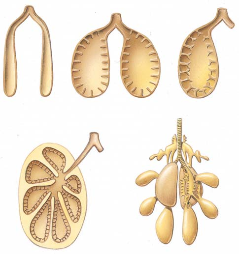
Intercambio de gases 999
manera, las partículas extrañas llegan al sistema digestivo, que puede disponer de esta materia de manera más efi caz que los delicados pulmones. Una persona normalmente traga más de medio litro de moco nasal cada día, e inclusive más durante una infección o una reacción alérgica. La parte posterior de las cavidades nasales es continua con la región de la garganta o faringe . El aire encuentra su camino hacia la faringe sin importar que la respiración sea por la nariz o por la boca. Una abertura en el lecho de la faringe conduce a la laringe . Debido a que la laringe contiene las cuerdas vocales, también se denomina “caja de la voz”. Cartílago incrustado en su pared impide que la laringe se colapse y la endurece al tacto cuando se le toca a través del cuello.
Tráquea
Sacos de aire
Pulmón
Aire
Sacos de aire anteriores
Sacos de aire posteriores
Primera exhalación. A medida que el ave exhala, el aire en los sacos de aire posteriores es forzado hacia los pulmones.
Segunda inhalación. El aire de la primera bocanada se mueve hacia los sacos de aire anteriores y parcialmente a los pulmones ( no se muestra ). El aire de la segunda exhalación ( gris ) fluye hacia los sacos de aire posteriores.
Segunda exhalación. La mayor parte del aire de la primera inhalación sale del cuerpo y el aire de la segunda inhalación fluye hacia los pulmones.
Primera inhalación. Conforme el ave inhala, el aire fresco ( verde ) fluye hacia los sacos de aire posteriores y parcialmente hacia los pulmones ( no se muestra ).
Estructura del sistema respiratorio de las aves.
FIGURA 46-5 Animada Intercambio de gases en las aves El sistema respiratorio de las aves incluye pulmones y sacos de aire. El proceso de respiración de las aves requiere dos ciclos de inhalación y exhalación para mantener un fl ujo de aire unidireccional a través de los pulmones.
Centros respiratorios
Faringe
Senos Cavidad nasal Lengua
Epiglotis
Laringe
Tráquea
Bronquiolos
Bronquios
Pulmón izquierdo
Esófago
Espacio ocupado por el corazón
Pulmón derecho
Diafragma
FIGURA 46-6 Animada El sistema respiratorio de los humanos La vista interior de un pulmón ilustra una porción de su extenso sistema de conductos de aire. El diafragma muscular constituye el piso de la cavidad torácica. Los centros respiratorios en el cerebro regulan el ritmo de la respiración.
▲
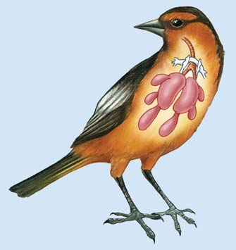
1000 Capítulo 46
El oxígeno se difunde a través de la delgada pared del alveolo y luego a través de las delgadas paredes de los capilares circundantes para llegar a la sangre.
1 μ m
Pared del alveolo Pared del capilar Glóbulo rojo
Bronquiolo
Capilar
Macrófago
Glóbulos rojos
Alveolo
Capilares
Célula epitelial del alveolo adyacente
Célula epitelial de la pared del alveolo Alveolo
Alveolo
30 μ m
Capilares en el pulmón. Los capilares rodean a los alveolos individuales (sacos de aire), permitiendo el intercambio de oxígeno y bióxido de carbono entre la sangre y los alveolos.
Micrografía mejorada con color de una porción de un capilar y la pared de un alveolo. La estructura oscura que se extiende a través del capilar forma parte de un glóbulo rojo. Observe la muy corta distancia que el oxígeno debe difundirse para llegar desde el aire dentro de los alveolos hasta los glóbulos rojos que lo transportan a los tejidos del cuerpo.
Un grupo de alveolos. El intercambio de gases se lleva a cabo a través de la delgada pared del alveolo. Redes capilares extensas se hallan entre las paredes de los alveolos adyacentes.
Dr. Richard Kessel & Dr. Randy K/Visuals Unlimited/Corbis
Courtesy of Drs. Peter Gehr, Marianne Bachofen, and Ewald R. Wiebel
FIGURA 46-7 Animada Estructura y función de los alveolos Los alveolos son los sacos de aire a través de las cuales se intercambian los gases entre el aire en el pulmón y la sangre en los capilares.
PUNTO CLAVE
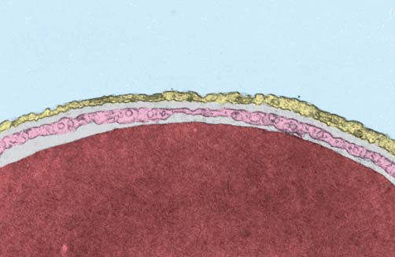
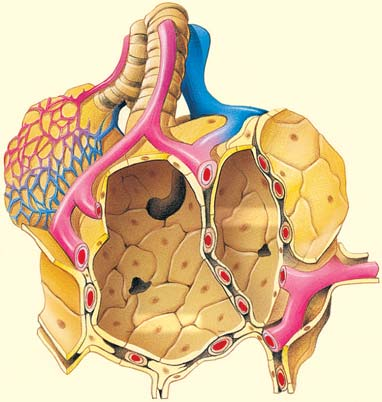
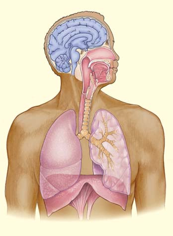
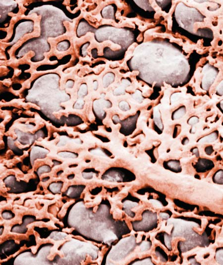
Intercambio de gases 1001
Durante la inhalación, el volumen de la cavidad torácica aumenta por la contracción del diafragma , el músculo en forma de cúpula que constituye su piso. Cuando el diafragma se contrae, se mueve hacia abajo, aumentando el volumen de la cavidad torácica ( FIGURA 46-8 ). Durante la inhalación forzada, cuando un gran volumen de aire es inhalado, los músculos intercostales externos también se contraen. Esta acción mueve las costillas hacia arriba, lo que también incrementa el volumen de la cavidad torácica. Puesto que los pulmones se adhieren a las paredes de la cavidad torácica, cuando el volumen de ésta aumenta, el espacio dentro de cada pulmón también aumenta. Así, el aire en los pulmones tiene más espacio donde moverse. Como resultado, la presión del aire en los pulmones cae 2 o 3 milímetros de mercurio (mm Hg) por debajo de la presión del aire fuera del cuerpo. Debido a esta diferencia de presión, el aire del exterior se desplaza hacia las vías respiratorias y llena los pulmones hasta que las dos presiones vuelven a ser iguales.
Al tragar, un apéndice de tejido denominado epiglotis cierra automáticamente la laringe de modo que los alimentos y líquidos entren al esófago en vez de a la vía respiratoria inferior. Si este mecanismo falla y entra materia a la sensible laringe, un refl ejo de tos expulsa el material. A pesar de estos mecanismos, algunas veces ocurre asfi xia. De la laringe, el aire pasa hacia la tráquea cuyo colapso es evitado por anillos de cartílago en su pared. La tráquea se divide en dos ramas, los bronquios ; cada uno conectado a un pulmón. Tanto la tráquea como los bronquios están revestidos por una membrana mucosa que contiene células ciliadas, las cuales atrapan partículas de tamaño mediano que escapan de los mecanismos de limpieza de la nariz y la laringe. El moco que contienen estas partículas es agitado constantemente hacia arriba por los cilios hacia la faringe, donde periódicamente es tragado. Este mecanismo, que funciona como un elevador de moco propulsado por cilios, ayuda a mantener la materia extraña fuera de los pulmones.
El intercambio de gases ocurre en los alveolos de los pulmones
Los pulmones son dos grandes órganos esponjosos que ocupan la cavidad torácica (el pecho). El pulmón derecho está dividido en tres lóbulos; el izquierdo, en dos. Cada pulmón está cubierto por una membrana pleural , que forma un saco continuo que envuelve al pulmón y se extiende hacia afuera para convertirse en el revestimiento de la cavidad torácica. La cavidad pleural es el espacio entre las membranas pleurales. Una película de fl uido en la cavidad pleural proporciona lubricación entre los pulmones y la pared del pecho. Debido a que el pulmón consta en gran parte de tubos de aire y tejido conectivo elástico, es un órgano esponjoso y fl exible con un área superfi cial interna muy grande para el intercambio de gases. Dentro de cada pulmón los bronquios se bifurcan, volviéndose progresivamente más cortos, estrechos y numerosos, en forma semejante a las ramas de un árbol. Las pequeñas ramas dan origen a los todavía más pequeños bronquiolos en cada pulmón que terminan en un grupo de minúsculos sacos de aire, los alveolos ( FIGURA 46-7 ). Cada pulmón humano contiene más de 200 millones de alveolos, ¡lo que representa un área superfi cial de aproximadamente el tamaño de una cancha de tenis! Cada alveolo está revestido por una sola capa delgada en extremo de células epiteliales. Los gases se difunden libremente a través de la pared del alveolo y hacia los capilares que lo rodean. Sólo dos capas celulares delgadas, el epitelio de la pared alveolar y el epitelio de la pared capilar, separan el aire contenido en el alveolo de la sangre. En resumen, el aire pasa por la siguiente secuencia de estructuras después de entrar al cuerpo:
fosas nasales ¡ cavidades nasales ¡ faringe ¡ laringe ¡
tráquea ¡ bronquios ¡ bronquiolos ¡ alveolos
La ventilación es llevada a cabo por la respiración
La ventilación es el proceso mecánico de mover aire del entorno hacia los pulmones y expulsarlo de éstos. Inhalar aire se denomina inhalación o inspiración ; expulsar aire es la exhalación o expiración . La cavidad torácica está cerrada, de modo que el único aire que puede entrar lo hace a través de la tráquea. (Cuando el pecho es perforado; por ejemplo, por una costilla fracturada o una herida de bala, el aire entra al espacio pleural y el pulmón se colapsa).
Las variaciones en la posición del diafragma y de los músculos intercostales externos e internos en la inhalación y exhalación cambian el volumen de la cavidad torácica.
Diafragma
Tráquea
Pulmón
Diafragma
Inhalación. El diafragma se contrae, incrementando el volumen de la cavidad torácica. El aire se mueve hacia los pulmones.
Exhalación. El diafragma se relaja, disminuyendo el volumen de la cavidad torácica. El aire se mueve hacia afuera de los pulmones.
Inhalación forzada. Los músculos intercostales externos se contraen, empujando la cavidad torácica hacia arriba y hacia fuera. Esto incrementa la dimensión del pecho de adelante hacia atrás y en consecuencia aumenta el volumen de la cavidad torácica.
Exhalación forzada. Los músculos intercostales internos se contraen, empujando la cavidad torácica hacia abajo y hacia dentro. El volumen de la cavidad torácica disminuye.
FIGURA 46-8 Animada Mecanismos de la respiración
PUNTO CLAVE
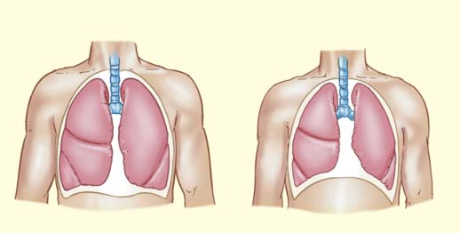
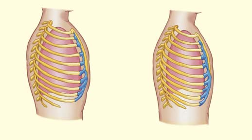
1002 Capítulo 46
Las moléculas de oxígeno pasan de manera efi ciente por simple difusión desde los alveolos, donde están más concentradas, hacia la sangre en los capilares pulmonares, donde están menos concentradas. Al mismo tiempo, el bióxido de carbono se mueve de la sangre, donde está más concentrado, hacia los alveolos, donde está menos concentrado. Cada gas se difunde a través de la única capa de células que reviste a los alveolos y la única capa de células que reviste a los capilares. Recuerde que en la respiración aeróbica el oxígeno es el aceptor fi nal de electrones; acepta dos electrones que se suman a los dos protones para producir agua (vea el capítulo 8). El aire inhalado (atmosférico) contiene alrededor de 20.9% de oxígeno, pero a causa de que el oxígeno se usa durante la respiración celular, el aire exhalado (alveolar) contiene sólo 14% de oxígeno. El bióxido de carbono se produce durante la respiración aeróbica. Es por esto que el aire exhalado contiene 100 veces más (5.6%) bióxido de carbono que el aire inhalado (casi 0.04% de bióxido de carbono). La concentración de oxígeno en las células es menor que en los capilares que entran a los tejidos y la concentración de bióxido de carbono es más alta en las células que en los capilares. A medida que la sangre circula por los capilares de un tejido como el cerebro o músculo, el oxígeno se mueve por simple difusión de la sangre a las células y el bióxido de carbono se mueve de las células hacia la sangre. El factor que determina la dirección y razón de difusión es la presión o tensión del gas particular. De acuerdo con la ley de Dalton de las presiones parciales , en una mezcla de gases la presión total es igual a la
La exhalación ocurre cuando el diafragma se relaja. El volumen de la cavidad torácica disminuye, aumentando la presión en los pulmones hasta 2 o 3 mm Hg por arriba de la presión atmosférica. Los millones de sacos de aire distendidos se desinfl an parcialmente y expulsan el aire inhalado. Luego, la presión vuelve a su valor normal y el pulmón está listo para otra inhalación. En resumen: durante la inhalación los millones de alveolos se llenan de aire como si fuesen globos diminutos. Luego, durante la exhalación, el aire sale de los alveolos, desinfl ándolos parcialmente. Durante la inhalación profunda o forzada, los músculos intercostales externos también se contraen, empujando la caja torácica hacia arriba y hacia fuera. Esto incrementa aún más el volumen de la cavidad torácica y más aire se mueve hacia los pulmones. Durante la exhalación forzada, los músculos de la pared abdominal y los músculos intercostales internos se contraen, empujando el diafragma hacia arriba y las costillas hacia abajo. Esto disminuye el volumen de la cavidad torácica y expulsa el aire de los pulmones. Algo del trabajo para estirar el tórax y los pulmones se emplea para expandir tejido conectivo elástico. También se requiere trabajo para superar la fuerza de cohesión de las moléculas de agua asociadas con las membranas pleurales. Las fuerzas entre las moléculas de agua producen una tensión superfi cial que resiste el estiramiento. El trabajo de respirar es reducido por surfactantes pulmonares , una mezcla de fosfolípidos semejante a un detergente secretada por células epiteliales especializadas en el revestimiento de los alveolos. Los surfactantes pulmonares se dispersan entre las moléculas de agua, reduciendo su fuerza de cohesión. Esta acción reduce notablemente la tensión superfi cial del agua, impide que los alveolos se colapsen y reduce la energía requerida para estirar los pulmones. Los bebés prematuros a menudo son incapaces de producir surfactantes, lo que ocasiona síndrome de difi cultad respiratoria. En estos bebés, la alta tensión superfi cial difi culta infl ar los pulmones y los alveolos se colapsan durante la expiración. Respirar es difi cultoso. La falla respiratoria como resultado de defi ciencia de surfactantes es una causa primordial de morbilidad y mortalidad en bebés prematuros. Esta defi ciencia puede tratarse con terapia de reemplazo, en la que un surfactante artifi cial es administrado a través de la tráquea.
La cantidad de aire respirado es mensurable
La cantidad de aire movido hacia dentro y fuera de los pulmones con cada respiración en reposo se denomina volumen corriente . Su valor normal es de alrededor de 500 mL. Una gran cantidad de aire viciado queda en los pulmones durante la respiración normal en reposo. El volumen de aire que queda en los pulmones al fi nal de una expiración máxima es el volumen residual (de alrededor de 1200 mL). La capacidad vital es la cantidad máxima de aire que una persona puede exhalar después de llenar los pulmones a su máxima extensión (alrededor de 4500 mL). La capacidad vital es una medida útil de la capacidad funcional de los pulmones.
El intercambio de gases se lleva a cabo en los alveolos
El sistema respiratorio suministra oxígeno a los alveolos, pero si el oxígeno se quedara en los pulmones, todas las demás células del cuerpo morirían pronto. El vínculo vital entre los alveolos y las células del cuerpo es el sistema circulatorio. Los capilares pulmonares llevan a la sangre muy cerca del aire alveolar. Cada alveolo sirve como un minúsculo depósito a partir del cual el oxígeno se difunde en la sangre ( FIGURA 46-9 ).
Alveolos en los pulmones
Células en el tejido
Capilar en el pulmón
Capilar en el tejido
O 2 CO 2
P O 2 = 100 mm Hg P CO 2 = 40 mm Hg
P O 2 = 40 mm Hg P CO 2 = 46 mm Hg
En los alveolos. La concentración de oxígeno es mayor que en los capilares pulmonares, de modo que el oxígeno se difunde de los alveolos a la sangre. El bióxido de carbono está más concentrado en la sangre que en los alveolos, de modo que se difunde fuera de los capilares hacia los alveolos.
En los tejidos. El oxígeno está más concentrado en la sangre que en las células del cuerpo; se difunde fuera de los capilares hacia las células. El bióxido de carbono está más concentrado en las células, por lo que se difunde fuera de ellas y se mueve hacia la sangre.
FIGURA 46-9 Intercambio de gases en los pulmones y tejidos Observe las diferencias en las presiones parciales del oxígeno y del dióxido de carbono antes y después de que los gases son intercambiados en los tejidos.
Intercambio de gases 1003
La porción de proteína de la hemoglobina está compuesta por cuatro cadenas peptídicas, normalmente dos cadenas α y dos cadenas β, cada una unida a un anillo hemo (hierro-porfi rina), vea la fi gura 3-22a. Un átomo de hierro está ligado en el centro de cada anillo hemo. La hemoglobina tiene la extraordinaria propiedad de formar un enlace químico débil con el oxígeno. Una molécula de oxígeno puede unirse al átomo de hierro en cada hemo. En el pulmón (o en la branquia), el oxígeno se difunde hacia los glóbulos rojos y se combina con la hemoglobina (Hb) para formar oxihemoglobina (HbO 2 ) . Cuando la hemoglobina se combina con el oxígeno, se vuelve roja brillante; sin oxígeno, se ve roja oscura, impartiendo un color morado a la sangre venosa. Debido a que el enlace químico formado entre el oxígeno y la hemoglobina es débil, la reacción es fácilmente reversible. Conforme la sangre circula a través de los tejidos donde la concentración de oxígeno es baja, la reacción avanza hacia la izquierda. La hemoglobina libera oxígeno, que se difunde fuera de la sangre y hacia las células de los tejidos.
Hb + O 2 Δ HbO 2
La máxima cantidad de oxígeno que puede transportar la hemoglobina es su capacidad de carga de oxígeno . La cantidad real de oxígeno unido a la hemoglobina es el contenido de oxígeno . La razón de contenido de O 2 a capacidad de carga de oxígeno es el porcentaje de saturación de O 2 de la hemoglobina. El porcentaje de saturación de O 2 es máximo en los capilares pulmonares, donde la concentración de oxígeno es mayor. En los capilares de los tejidos, donde hay menos oxígeno, la oxihemoglobina se disocia, liberando oxígeno. Ahí el porcentaje de saturación de la hemoglobina es menor. La curva de disociación de oxígeno-hemoglobina mostrada en la FIGURA 46-10a ilustra la relación entre la presión parcial del oxígeno y el porcentaje de saturación de la hemoglobina. A medida que se incrementa la concentración de oxígeno, hay un aumento progresivo en el porcentaje de hemoglobina que se combina con el oxígeno. La habilidad del oxígeno para combinarse con la hemoglobina y ser liberado de la oxihemoglobina es infl uenciada por varios factores además del porcentaje de saturación de O 2 . Estos factores incluyen el pH, la concentración de bióxido de carbono y la temperatura. El bióxido de carbono producido en tejidos que respiran reacciona con agua en el plasma para formar ácido carbónico, H 2 CO 3 . Es por esto que cualquier incremento en la concentración de bióxido de carbono también aumenta la acidez (disminuye el pH) de la sangre. La oxihemoglobina descarga el oxígeno más rápido en un medio ácido que en uno con pH normal. El desplazamiento de la curva de disociación de oxígeno-hemoglobina debido a un cambio de pH se conoce como efecto Bohr ( FIGURA 46-10b ). El ácido láctico liberado de los músculos activos también disminuye el pH de la sangre y tiene un efecto semejante sobre la curva de disociación de oxígeno-hemoglobina: se descarga más oxígeno que está disponible para la contracción muscular. Algo de bióxido de carbono es transportado por la molécula de hemoglobina. Aunque el bióxido de carbono se une a la molécula de hemoglobina de manera diferente y en un sitio distinto a como lo hace el oxígeno, la unión de una molécula de bióxido de carbono libera una molécula de oxígeno de la hemoglobina. Este efecto de la concentración de bióxido de carbono sobre la curva de disociación de oxígenohemoglobina es importante. En los capilares de los pulmones (o en las branquias en los peces), la concentración de bióxido de carbono es relativamente baja y la de oxígeno es alta, de modo que el oxígeno se combina con un porcentaje muy elevado de hemoglobina. En los capilares de los tejidos la concentración de bióxido de carbono es alta
suma de las presiones de los gases individuales. Cada gas ejerce, independientemente de los otros, una presión parcial ; la misma que ejercería si estuviese solo. A nivel del mar, la presión barométrica (la presión de la atmósfera de la Tierra) normalmente hace subir una columna de mercurio a 760 mm de altura. Debido a que el oxígeno constituye alrededor de 21% de la atmósfera, la contribución del oxígeno a esa presión es 0.21 × 760 = 160 mm Hg. Así, 160 mm Hg es la presión parcial del O 2 atmosférico, la cual se abrevia como P O 2 . En contraste, la presión atmosférica del CO 2 es 0.3 mm Hg, la cual se abrevia como P CO 2 . La ley de difusión de Fick explica que la cantidad de oxígeno o bióxido de carbono que se difunde a través de la membrana de un alveolo depende de la diferencia en la presión parcial en ambos lados de la membrana y del área superfi cial de esta última. El gas se difunde más rápido si la diferencia en presión o el área superfi cial aumentan.
El intercambio de gases se lleva a cabo en los tejidos
La presión parcial del oxígeno en la sangre arterial es de alrededor de 100 mm Hg. La P O 2 en los tejidos es todavía más baja, promediando alrededor de 40 mm Hg. En consecuencia, el oxígeno se difunde fuera de los capilares y hacia los tejidos. Sin embargo, no todo el oxígeno sale de la sangre. Ésta pasa a través de los capilares del tejido demasiado rápido para llegar al equilibrio. Como resultado, la presión parcial del oxígeno en la sangre venosa que regresa a los pulmones es de alrededor de 40 mm Hg. Así, el aire exhalado tiene sólo parte de su oxígeno eliminado, ¡lo cual es bueno para quienes requieren reanimación boca a boca!
Los pigmentos respiratorios incrementan la capacidad para transportar oxígeno
Los pigmentos respiratorios se combinan reversiblemente con el oxígeno y aumentan de manera sustancial la capacidad de la sangre para transportarlo. Las hemocianinas son proteínas que contienen cobre dispersas en la hemolinfa de muchas especies de moluscos y artrópodos. Sin oxígeno, estos pigmentos no tienen color. Cuando el oxígeno se combina con el cobre, las hemocianinas son azules. La hemoglobina y la mioglobina son los pigmentos respiratorios más comunes en los animales. La hemoglobina es el pigmento que se encuentra en la sangre de los vertebrados. También está presente en muchas especies de invertebrados, incluyendo anélidos, nematodos, moluscos y artrópodos. En algunos de estos animales, la hemoglobina está dispersa en el plasma, en vez de estar confi nada a los glóbulos rojos de la sangre. Recuerde que la mioglobina es una forma de hemoglobina encontrada en las fi bras musculares (vea el capítulo 40). En humanos y otros mamíferos, el oxígeno inhalado se difunde fuera de los alveolos y entra en los capilares pulmonares. El plasma en equilibrio con el aire alveolar puede tomar sólo 0.25 mL de oxígeno por cada 100 mL. Sin embargo, el oxígeno se difunde hacia los glóbulos rojos y se combina con la hemoglobina. Las propiedades de la hemoglobina permiten que toda la sangre transporte aproximadamente 20 mL de oxígeno por cada 100 mL. La hemoglobina transporta casi 99% del oxígeno. El resto se disuelve en el plasma. El término hemoglobina es actualmente una denominación general para un grupo de compuestos relacionados, todos los cuales constan de un grupo de hierro-porfi rina, o hemo, unido a una proteína conocida como globina . La porción de proteína de la molécula varía en tamaño, composición de aminoácidos y propiedades físicas entre varias especies.
1004 Capítulo 46
dosis respiratoria . En esta situación el bióxido de carbono es producido más rápido de lo que es expulsado por los pulmones. Como resultado, la concentración de ácido carbónico en la sangre aumenta. Cuando el pH de la sangre desciende por debajo de 7, el sistema nervioso central se deprime y la persona se desorienta. La acidosis respiratoria sin tratamiento puede provocar coma y muerte.
La respiración es regulada por centros respiratorios en el cerebro
La respiración es un proceso rítmico e involuntario regulado por centros respiratorios en el tronco encefálico (vea la fi gura 46-6). El ritmo básico de la respiración es regulado por grupos de neuronas en la médula. Estas neuronas envían una ráfaga de impulsos al diafragma y a los músculos intercostales externos que los hace contraerse. Al cabo de varios segundos, estas neuronas se vuelven inactivas, los músculos se relajan y ocurre la exhalación. Los centros respiratorios en el puente de Varolio ayudan a controlar la transición de inspiración a exhalación. Estos centros pueden estimular o inhibir los centros respiratorios en la médula. El ciclo de actividad e inactividad se repite, de modo que en reposo una persona respira alrededor de 14 veces por minuto. La sobredosis de algunos medicamentos, como barbitúricos, deprime los centros respiratorios y puede conducir a insufi ciencia respiratoria. El ritmo básico de la respiración cambia en respuesta a las necesidades del cuerpo. Cuando una persona juega un rápido partido de tenis,
y la de oxígeno es baja, por lo que la hemoglobina descarga rápidamente el oxígeno. El oxígeno y el bióxido de carbono unidos a la hemoglobina en los glóbulos rojos no contribuyen a las presiones parciales que rigen la difusión. La carga y descarga de gases en la hemoglobina dependen de las presiones parciales del plasma y el fl uido intersticial (que son determinadas por los gases disueltos en estos fl uidos).
El bióxido de carbono es transportado principalmente como iones de bicarbonato
La sangre transporta bióxido de carbono en tres formas. Alrededor de 10% del bióxido de carbono se disuelve en el plasma. Otro 30% entra en los glóbulos rojos y se combina con la hemoglobina. Debido a que el enlace entre la hemoglobina y el bióxido de carbono es muy débil, la reacción es fácilmente reversible. La mayoría del bióxido de carbono (alrededor de 60%) se mueve por el plasma como iones de bicarbonato (HCO 3 – ). En el plasma, el bióxido de carbono se combina lentamente con agua para formar ácido carbónico. Esta reacción se lleva a cabo mucho más rápido dentro de los glóbulos rojos como resultado de la acción de la enzima anhidrasa carbónica ( FIGURA 46-11 ). El ácido carbónico se disocia, formando iones de hidrógeno y iones de bicarbonato.
Anhidrasa carbónica CO 2 + H 2 O ¬¡ H 2 CO 3 ¡ H + + HCO 3 −
Bióxido Agua Ácido Ion de Ion de de carbono carbónico hidrógeno bicarbonato
La mayoría de los iones de hidrógeno liberados del ácido carbónico se combinan con la hemoglobina, que es un amortiguador muy efi caz. Muchos de los iones de bicarbonato se difunden hacia el plasma. La acción de la anhidrasa carbónica en los glóbulos rojos mantiene un gradiente de difusión para que el bióxido de carbono se mueva hacia dentro y luego hacia fuera de los glóbulos rojos. A medida que los iones de bicarbonato con carga negativa se mueven fuera de los glóbulos rojos, los iones de cloruro (Cl – ) en el plasma se difunden hacia los glóbulos rojos para remplazarlos, un proceso conocido como cambio o desplazamiento de cloruro . En los capilares alveolares, el CO 2 se difunde fuera del plasma y hacia los alveolos. Conforme decrece la concentración de CO 2 , la secuencia de la reacción recién descrita se invierte. Cualquier condición (como el enfi sema) que interfi era con la eliminación de bióxido de carbono por los pulmones puede conducir a aci-
A medida que la concentración de oxígeno crece, el porcentaje de hemoglobina que se combina con el oxígeno aumenta.
20
40
60
80
100
0
Presión parcial del oxígeno (mm Hg)
20 40 60 80 100
Porcentaje de saturación de O 2
Sangre pobre en oxígeno regresa de los tejidos
Sangre rica en oxígeno sale de los pulmones
20
40
60
80
100
0
Presión parcial del oxígeno (mm Hg)
20 40 60 80 100
Porcentaje de saturación de O 2
7.6 7.4 7.2
0 0
Curva de disociación de oxígeno-hemoglobina normal. Observe la relación entre la presión parcial del oxígeno y el porcentaje de saturación de O 2 de la hemoglobina. El oxígeno se une a la hemoglobina en los pulmones y se desprende de la hemoglobina en los tejidos.
Efecto del pH sobre la curva de oxígeno-hemoglobina (efecto Bohr). El pH normal de la sangre humana es 7.4. Encuentre la ubicación sobre el eje horizontal donde la presión parcial del oxígeno es 40 y siga la línea hacia arriba a través de las curvas. Observe que la saturación de la hemoglobina con oxígeno difiere entre las tres curvas, inclusive si la presión parcial del oxígeno es la misma. La carga de oxígeno aumenta a mayor pH (7.6). A menor pH (7.2) la hemoglobina descarga más oxígeno.
FIGURA 46-10 Animada Curvas de disociación de oxigeno-hemoglobina
PUNTO CLAVE
Intercambio de gases 1005
res, conduciendo a una respiración más rápida. A medida que los pulmones eliminan bióxido de carbono, la concentración de los iones de hidrógeno en la sangre y otros fl uidos del cuerpo decrece y se restablece la homeostasis. Algo interesante es que la concentración de oxígeno no suele desempeñar un papel importante en regular la respiración. Sólo si la presión parcial del oxígeno desciende notablemente los quimiorreceptores en la aorta y las arterias carótidas son estimulados para enviar mensajes a los centros respiratorios. La respiración profunda, que ocurre cuando hay ansiedad y en muchas enfermedades respiratorias, provoca hipoxia , una defi ciencia en oxígeno. Incluso una respiración profunda rápida resulta en hipoxia porque el aire viciado no se limpia en las vías respiratorias y los pulmones no son ventilados. La hipoxia causa somnolencia, fatiga mental, dolor de cabeza y algunas veces euforia. La capacidad para pensar y emitir juicios se daña, así como la habilidad para realizar tareas que requieren coordinación.
necesita más oxígeno que cuando estudia biología. Cuando se hace ejercicio, la tasa de respiración celular aeróbica aumenta, produciendo más bióxido de carbono. El cuerpo debe desechar este bióxido de carbono mediante un incremento en la ventilación. La concentración de bióxido de carbono es el estímulo químico más importante para regular la frecuencia respiratoria. Quimiorreceptores especializados en la médula y en las paredes de la aorta y las arterias carótidas son sensibles a los cambios en la concentración de bióxido de carbono en las arterias. Cuando se les estimula, envían impulsos a los centros respiratorios, lo que incrementa la frecuencia respiratoria. Los quimiorreceptores en las paredes de la aorta, denominados cuerpos aórticos , y los de las paredes de las arterias carótidas, los cuerpos carotideos , son sensibles a cambios en las concentraciones de iones de hidrógeno y de oxígeno, así como en los niveles de bióxido de carbono. Recuerde que un aumento en la concentración de bióxido de carbono incrementa los iones de hidrógeno (del ácido carbónico) y disminuye el pH de la sangre. Incluso una ligera disminución en el pH estimula estos quimiorrecepto-
La enzima anhidrasa carbónica (en los glóbulos rojos) convierte el bióxido de carbono en ácido carbónico; el ácido carbónico se disocia, produciendo iones de hidrógeno y iones de bicarbonato. Alrededor de 60% del bióxido de carbono es transportado en el plasma como iones de bicarbonato.
CO 2
CO 2
CO 2
CO 2
H 2 CO 3 Ácido carbónico
HCO 3 – Bicarbonato
HCO 3 – Bicarbonato + H +
H + Hemoglobina
H 2 O
CO 2 + H 2 O
Anhidrasa carbónica
Célula de tejido
Plasma Tejido capilar de la pared
Glóbulo rojo
Cl –
Cl –
Desplazamiento de cloruro
- En los tejidos, el bióxido de carbono se difunde de las células hacia el plasma. La mayor parte del bióxido de carbono entra en los glóbulos rojos, donde la enzima anhidrasa carbónica lo convierte rápidamente en ácido carbónico. El ácido carbónico se disocia, produciendo iones de bicarbonato (HCO 3 – ) y H + . A medida que los iones de bicarbonato se mueven hacia el plasma, los iones de cloruro los reemplazan. La hemoglobina se combina con H + , evitando una disminución del pH.
CO 2
CO 2
CO 2
CO 2
H 2 CO 3 Ácido carbónico
HCO 3 – Bicarbonato
HCO 3 – Bicarbonato
- H +
H +
Hemoglobina
H 2 O
CO 2 + H 2 O
Desplazamiento de cloruro
Tejido capilar de la pared
Alveolos
Cl –
Cl –
- En los pulmones, el bióxido de carbono se difunde fuera del plasma y hacia los alveolos. Las reacciones descritas en (a) se invierten. Los iones de bicarbonato se difunden del plasma hacia los glóbulos rojos. El H + liberado de la hemoglobina se combina con los iones de bicarbonato, produciendo ácido carbónico. El bióxido de carbono producido a partir del ácido carbónico se difunde fuera de la sangre y hacia los alveolos.
Plasma
FIGURA 46-11 Transporte de bióxido de carbono
PUNTO CLAVE
1006 Capítulo 46
sale de la disolución, las burbujas producidas pueden dañar los tejidos y bloquear los capilares, interfi riendo con la circulación de la sangre. Los efectos clínicos de la enfermedad por descompresión son dolor, somnolencia, parálisis, inconsciencia e inclusive muerte. La enfermedad por descompresión es más común en el buceo en aguas profundas que en vuelos a gran altura. A medida que un buzo desciende, la presión circundante aumenta enormemente: 1 atmósfera (la presión atmosférica a nivel del mar, que es igual a 760 mm Hg) por cada 10 m. Para evitar el colapso de pulmón, es necesario suministrar al buzo aire presurizado, exponiendo los pulmones a presiones alveolares muy altas. A nivel del mar, un adulto humano tiene alrededor de 1 L de nitrógeno disuelto en el cuerpo, distribuido aproximadamente la mitad en la grasa y la mitad en los fl uidos corporales. Después de que el cuerpo de un buzo ha sido saturado con nitrógeno a una profundidad de 100 m, los fl uidos del cuerpo contienen alrededor de 10 L de nitrógeno. Para evitar que este nitrógeno salga rápidamente de la solución en forma de burbujas y ocasione enfermedad por descompresión, el buzo debe subir a la superfi cie de manera gradual, deteniéndose a ciertos niveles en su ascenso. Estas pausas permiten que el nitrógeno sea expulsado lentamente a través de los pulmones.
Algunos mamíferos están adaptados para bucear
Algunos mamíferos que respiran oxígeno pueden pasar largos períodos bajo el agua sin salir por aire. Los delfi nes, las ballenas, las focas y los castores tienen adaptaciones estructurales y fi siológicas que les permiten bucear en busca de alimentos o para evadir a sus enemigos. Con sus cuerpos aerodinámicos y sus extremidades anteriores modifi cados como aletas, los mamíferos que bucean realizan impresionantes proezas acuáticas. La foca de Weddell puede nadar bajo el hielo a una profundidad de 596 m durante más de una hora sin salir a tomar aire. El enorme elefante marino, que mide alrededor de 5 m de longitud y pesa de 2 a 4 toneladas, puede sumergirse todavía más ( FIGURA 46-12 ). Un elefante marino hembra puede bucear hasta profundidades mayores a 1500 m en menos de 20 minutos y permanecer bajo la superfi cie por más de una hora. Las adaptaciones fi siológicas, incluidas las maneras de distribuir y almacenar oxígeno, permiten que algunos mamíferos buceen profundamente y permanezcan bajo el agua durante largos períodos. Las tortugas y las aves que bucean dependen del oxígeno almacenado en sus pulmones. No obstante, los mamíferos que bucean no toman ni almacenan aire adicional antes de zambullirse. De hecho, las focas exhalan antes de introducirse al agua. Con menos aire en los pulmones fl otan menos. Sus pulmones se colapsan aproximadamente de 50 a 70 m de profundidad y luego vuelven a infl arse cuando ascienden, de modo que no funcionan durante casi toda la inmersión. Se cree que estas adaptaciones reducen la posibilidad de enfermedad por descompresión porque con menos aire en los pulmones hay menos nitrógeno en la sangre para disolverse durante la inmersión. Las focas tienen alrededor del doble de volumen de sangre, con respecto a su peso corporal, que los mamíferos que no bucean. Los mamíferos que bucean también tienen altas concentraciones de mioglobina, que almacena el oxígeno en los músculos. Estos animales tienen hasta 10 veces más mioglobina que los mamíferos terrestres. El muy grande bazo típico de muchos mamíferos que bucean almacena glóbulos rojos ricos en oxígeno. Durante una inmersión, el aumento de presión aprieta el bazo, liberando hacia la circulación los glóbulos rojos almacenados. Los mamíferos que bucean reducen notablemente la energía gastada en el buceo profundo (más de 200 m) al deslizarse. Secuencias fi lmadas de focas y ballenas buceando muestran que se deslizan la mayor parte del tiempo. El deslizamiento es posible porque la fuerza de fl otación del animal disminuye a medida que los pulmones se colapsan gradualmente
Aunque la respiración es involuntaria, la acción de los centros respiratorios puede ser infl uida conscientemente durante un lapso breve al estimularlos o inhibirlos. Por ejemplo, una persona puede inhibir su respiración al contener el aliento. Sin embargo, no es posible hacerlo de manera indefi nida porque al fi nal se experimenta una necesidad apremiante de respirar. Incluso si se ignora este apremio es muy probable ya no resistir y tener que reanudar la respiración Las personas que han dejado de respirar a causa de somnolencia, inhalación de humo, choque eléctrico o paro cardiaco algunas veces pueden reanimarse con respiración de boca a boca hasta que vuelven sus propios refl ejos respiratorios. La resucitación o reanimación cardiopulmonar ( RCP ) es un método para ayudar a quienes han sufrido paro respiratorio y cardiaco. La reanimación cardiopulmonar debe iniciarse de inmediato porque en menos de 4 minutos de falta de oxígeno ocurre daño cerebral irremediable. Varias instituciones ofrecen entrenamiento en reanimación cardiopulmonar al público en general.
La hiperventilación reduce la concentración de bióxido de carbono
Los nadadores submarinos y algunos buzos asiáticos buscadores de perlas experimentan hiperventilación voluntaria antes de sumergirse en el agua. Al realizar una serie de inhalaciones y exhalaciones profundas, “eliminan” CO 2 , reduciendo de manera signifi cativa el contenido de este gas en el aire alveolar y en la sangre. Este hecho les permite permanecer bajo el agua durante más tiempo antes de que el apremio por respirar se vuelva irresistible. Cuando la hiperventilación continúa durante un largo período, puede haber mareo e inconsciencia. Estas respuestas ocurren porque para mantener la presión sanguínea normal es necesaria cierta concentración de bióxido de carbono en la sangre. (Este mecanismo opera por medio del centro vasoconstrictor en el cerebro, que mantiene el tono muscular de las paredes de los vasos sanguíneos). Además, si los buzos reprimen la respiración durante mucho tiempo, la baja concentración de oxígeno puede resultar en inconsciencia y ahogo.
Volar muy alto o bucear muy profundo puede interrumpir la homeostasis
La presión barométrica disminuye a altitudes progresivamente mayores. Debido a que la concentración de oxígeno en el aire permanece en 21%, la presión parcial del oxígeno decrece junto con la presión barométrica. Cuando una persona se mueve hacia una gran altura, su cuerpo se ajusta con el tiempo al producir un mayor número de glóbulos rojos. Obtener sufi ciente oxígeno del aire se vuelve un problema siempre creciente a medida que se asciende a altitudes mayores. Todos los jets de alto vuelo tienen cabinas herméticas presurizadas al equivalente de la presión barométrica a una altitud aproximada de 2000 m. Si un jet que vuela a 11,700 m de altura se despresuriza repentinamente, el piloto podría perder la conciencia en alrededor de 30 segundos y entrar en estado de coma en aproximadamente 1 minuto. Además del problema de hipoxia, un descenso rápido en la presión barométrica provoca enfermedad por descompresión (comúnmente conocida como “parálisis de los buzos”). Cuando la presión barométrica desciende por debajo de la presión total de todos los gases disueltos en la sangre y otros fl uidos del cuerpo, los gases tienden a salir de la disolución y formar burbujas. Un ejemplo conocido ocurre cuando se destapa una botella de soda, reduciendo la presión en ella. De la solución se libera bióxido de carbono que sale al aire en forma de burbujas. En el cuerpo, el nitrógeno tiene poca solubilidad en la sangre y los tejidos. Cuando
Intercambio de gases 1007
de oxígeno (el fl ujo de sangre en brazos y piernas disminuye). La tasa metabólica decrece, de modo que se requiere menos oxígeno.
Repaso
■ ¿Cuál es la secuencia del flujo de aire inhalado a través de las estructuras respiratorias en un mamífero? ¿Qué ocurre en los alveolos?
■ ¿Por qué la composición del aire alveolar difiere de la del aire atmosférico? Explique.
■ ¿Cómo afecta la concentración de bióxido de carbono la curva de disociación de oxígeno-hemoglobina?
■ ¿Qué mecanismos fi siológicos logran un aumento en la frecuencia y profundidad de la respiración cuando se practica ejercicio? ¿Por qué es necesario tal incremento?
46.4 RESPIRACIÓN DE AIRE CONTAMINADO
OBJETIVO DE APRENDIZAJE
7 Describir los mecanismos de defensa que protegen a los pulmones y explicar los efectos del aire contaminado y del hábito de fumar sobre el sistema respiratorio.
Varios mecanismos de defensa protegen a los delicados pulmones de las sustancias dañinas que se respiran ( FIGURA 46-13 ). Las vellosidades en las fosas nasales, el revestimiento mucoso ciliado en la nariz y faringe, y el ascensor de moco mediante cilios de la tráquea y los bronquios atrapan partículas extrañas inhaladas con el aire. Recientemente los investigadores reportaron que los cilios de las células epiteliales que revisten las vías respiratorias de los humanos funcionan como quimiorreceptores que detectan el sabor amargo. Los compuestos amargos incrementan la concentración de Ca 2+ , que, a su vez, aumenta el ritmo del movimiento ciliar. Como resultado, los compuestos dañinos son eliminados con mayor rapidez. Una de las respuestas de defensa más rápidas del cuerpo a la respiración de aire sucio es la constricción bronquial . En este proceso, los tubos branquiales se estrechan, aumentando la posibilidad de que las
y la cantidad de aire en ellos se reduce. Luego, la fuerza de gravedad atrae hacia abajo al animal. Cuando un mamífero bucea hasta su límite, se activan mecanismos fi siológicos conocidos en conjunto como refl ejo de buceo . La tasa metabólica decrece alrededor de 20%, con lo cual se conserva oxígeno. Se detiene la respiración y ocurre bradicardia (disminución del ritmo cardiaco). El ritmo cardiaco puede bajar a la décima parte de lo normal, reduciendo el consumo de oxígeno y energía por parte del cuerpo. La sangre es redistribuida, de modo que el corazón y el cerebro reciben la mayor parte; la piel, los músculos, el aparato digestivo y otros órganos internos pueden sobrevivir con menos oxígeno, y menos sangre es dirigida a estos órganos mientras el animal permanece sumergido. El refl ejo de buceo está presente en alguna medida en los humanos, en quienes puede actuar como mecanismo de protección durante el nacimiento, cuando un bebé puede ser privado de oxígeno durante varios minutos. Han sido documentados casos de casi ahogamiento, especialmente de niños pequeños, en los que la víctima fue sumergida hasta por 45 minutos en agua muy fría antes de ser rescatada y reanimada. Muchos de estos sobrevivientes no mostraron daño cerebral. El choque del agua helada aminora el ritmo cardiaco, aumenta la presión sanguínea y desvía la sangre hacia órganos internos del cuerpo que tienen más necesidad
FIGURA 46-12 Buceo a profundidad Los elefantes marinos, como éste del norte ( Mirounga angustirostris ), pueden ser los buzos a mayor profundidad de la Tierra. Los investigadores han registrado sus inmersiones a profundidades de más de 1500 m.
Bruce Watkins/Animals Animals
FIGURA 46-13 Contaminación urbana del aire La industria continúa arrojando miles de toneladas de contaminantes a la atmósfera. A pesar de la tecnología moderna, la contaminación del aire sigue constituyendo un importante riesgo para la salud.
David Nunuk/Science Photo Library/Photo Researchers, Inc.
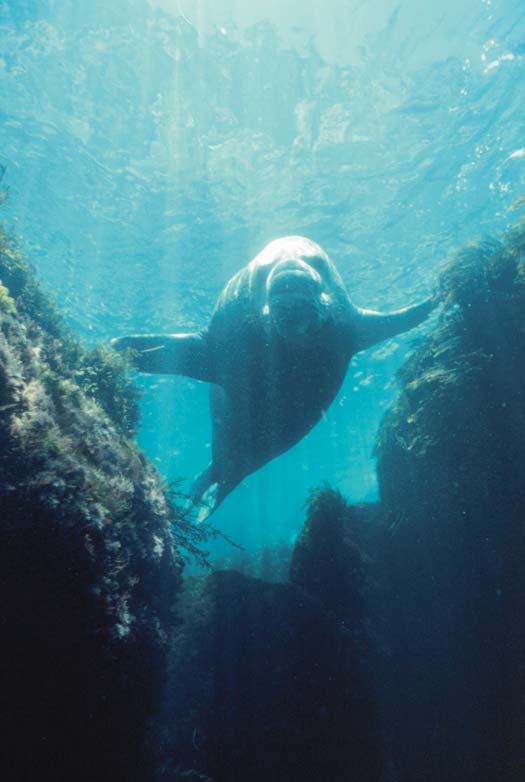
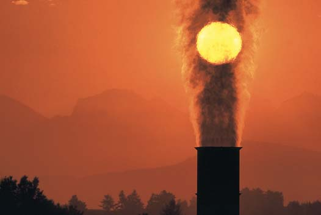
1008 Capítulo 46
más de 30 minutos. Los fumadores en serie y quienes respiran aire muy contaminado están en un estado de constricción bronquial crónica. Ni los bronquios más pequeños ni los alveolos están equipados con moco o células ciliadas. Las partículas extrañas que pasan por otras defensas respiratorias y encuentran su camino hacia los alveolos pueden ser envueltas por macrófagos. Luego, éstos pueden acumularse en el tejido
partículas inhaladas terminen en el revestimiento mucoso pegajoso. Por desgracia, la constricción bronquial estrecha las vías respiratorias. Menos aire puede llegar a los pulmones, disminuyendo la cantidad de oxígeno disponible para las células del cuerpo. Quince aspiraciones a un cigarro durante un período de 5 minutos aumentan la resistencia de las vías respiratorias hasta tres veces y dicha resistencia añadida a la respiración dura
¿Cuál es la causa de enfermedad, discapacidad y muerte en Estados Unidos que más puede evitarse? Según los Centros para el Control de Enfermedades de Estados Unidos, es el consumo de tabaco. Fumar cigarro mata más personas que la combinación de alcohol, accidentes automovilísticos, suicidio, SIDA, homicidios y el uso de drogas ilegales. Más de 443,000 personas mueren prematuramente cada año por fumar o ser fumador pasivo. Otras 8.6 millones de personas padecen graves enfermedades causadas por fumar. 1
Fumar tabaco es por mucho el factor de riesgo más importante del cáncer de pulmón, que es el tipo de cáncer más letal en todo el mundo. También está asociado con muchos otros tipos de cáncer y explica alrededor de 30% de todas las muertes por cáncer. Fumar tabaco es también un importante factor de riesgo para enfermedades cardiovasculares, enfermedad pulmonar obstructiva crónica y muchas otras. A pesar de estos hechos desalentadores, alrededor de 20% tanto de los estudiantes de secundaria como de los adultos en Estados Unidos continúa fumando. (Esta cantidad es más de 43 millones de adultos estadunidenses y 71 millones de adolescentes). El humo inhalado por los fumadores pasivos también es un conocido cancerígeno en los humanos. Se estima que provoca la muerte de 49,000 personas sólo en Estados Unidos. Millones de niños y adultos están expuestos a este humo en sus hogares y sitios de trabajo. Esta exposición ocasiona enfermedad y muerte prematura en niños y adultos que no fuman. Los bebés y los niños expuestos a inhalar el humo del cigarro de los demás están en riesgo creciente de padecer el síndrome de muerte súbita del infante (SIDS por sus siglas en inglés), infecciones respiratorias agudas, neumonía, bronquitis, infecciones en los oídos y asma. En los adultos, aspirar el humo del cigarro de los demás provoca enfermedad cardiovascular y cáncer de pulmón. Alrededor de 60% de los no fumadores en Estados Unidos presentan evidencia biológica de exposición al humo como fumadores pasivos. La nicotina es altamente adictiva; así como la morfi na, las anfetaminas y la cocaína,
incrementa la concentración de dopamina en el sistema límbico. Esta área ayuda a integrar las emociones y la dopamina puede facilitar el aprendizaje de una asociación entre los efectos placenteros de la droga y otros estímulos, como el olor del humo del tabaco. La nicotina, como la cocaína y otras drogas de las que se abusa, provoca cambios a largo plazo en el cerebro. La señalización celular y otros mecanismos subyacentes en la adicción a las drogas son muy semejantes a los del aprendizaje y la memoria. Se estima que 70% de los fumadores (más de 33 millones) desean dejar de fumar, pero cada año sólo 2.5% lo logran de manera permanente. La sustitución de la nicotina por goma de mascar, parches, aerosoles nasales, inhaladores o pastillas ha demostrado ser efi caz como ayuda para dejar de fumar, especialmente cuando se usa con terapia del comportamiento. Ciertos antidepresivos se usan para reducir el ansia de nicotina. Un medicamento de prescripción más reciente (Chantix) funciona al bloquear los receptores de nicotina en el cerebro. Reduce el síndrome de abstinencia de la nicotina y también disminuye los efectos placenteros de fumar. A continuación se presentan algunos hechos sobre el hábito de fumar: • Fumar acorta la vida de un adulto masculino fumador por 13.2 años en promedio y la de una mujer fumadora por 14.5 años en promedio. • Si se fuma más de un paquete de cigarros al día se tiene 20 veces más probabilidad de adquirir cáncer de pulmón que un no fumador. Según la American Cancer Society, fumar cigarros provoca casi nueve de cada diez muertes por cáncer de pulmón. • Si usted fuma, duplica sus posibilidades de morir a causa de una enfermedad cardiovascular. • Si usted fuma, tiene 20 veces más probabilidades que un no fumador de desarrollar bronquitis crónica y enfi sema. Alrededor de 90% de todas las muertes por asma, enfi sema o enfermedad pulmonar obstructiva crónica (EPOC) son provocadas por fumar cigarros. • Si usted fuma, tiene alrededor de 5% menos oxígeno circulando en su
sangre (porque el monóxido de carbono se une a la hemoglobina) que un no fumador. • Si usted fuma cuando está embaraza da, su bebé pesará alrededor de 170 g menos al nacer, y hay un mayor riesgo de aborto, nacimiento prematuro (parto temprano), muerte fetal y síndrome de muerte súbita del infante. • Los infantes cuyos padres fuman tienen el doble del riesgo de contraer neumonía o bronquitis en su primer año de vida. • No hay ningún nivel libre de riesgo cuando hay exposición al humo del cigarro de los demás. Las personas no fumadoras que están expuestas al humo del cigarro incrementan su riesgo de desarrollar enfermedad cardiaca entre 25% y 30%, y cáncer de pulmón, entre 20% y 30%. • Cuando los fumadores dejan de fumar, su riesgo de morir por enfermedad pulmonar obstructiva crónica, enfermedad cardiovascular o cáncer decre ce gradualmente. (Cambios precisos en el riesgo dependen del número de años que ha fumado la persona, el número de cigarros consumidos al día, la edad a la que empezó a fumar y el número de años desde que dejó de fumar.) • Casi cada estadunidense que empieza a fumar es un adolescente (cada día, más de 3500 adolescentes fuman su primer cigarro). Alrededor de la tercera parte de ellos morirá prematuramente a causa de una enfermedad relacionada con fumar. • Mientras más pronto empieza a fumar una persona, tiene más probabilidad de ser un adulto fumador. • Los costos médicos directos por el uso de tabaco ascienden a más de 96 mil millones de dólares al año. • Los productos de tabaco sin humo (para aspirar o mascar) no constituyen una alternativa segura en vez de fumar tabaco. Todas las formas de estos productos tienen sustancias químicas que provocan cáncer.
Preguntas acerca de
LOS EFECTOS DE FUMAR
1 Las estadísticas citadas son de los Centers for Disease Control y la American Cancer Society.
Intercambio de gases 1009
dores bastante asiduos (vea Preguntas acerca de: Los efectos de fumar ). Las personas con bronquitis crónica a menudo desarrollan enfi sema pulmonar , una enfermedad también muy común en fumadores. En este padecimiento, los alveolos pierden su elasticidad y las paredes entre alveolos adyacentes son destruidas. El área superfi cial del pulmón se reduce tanto que el intercambio de gases se ve afectado seriamente. El aire no es expulsado efi cazmente, y el aire viciado se acumula en los pulmones. La víctima de enfi sema se esfuerza en cada respiración y aun así el cuerpo no obtiene sufi ciente oxígeno. Para compensar esta situación, la aurícula derecha del corazón bombea más fuerte y se agranda. Los pacientes de enfi sema a menudo fallecen por insufi ciencia cardiaca. La mayoría de los pacientes con enfermedad pulmonar obstructiva crónica (EPOC) , una condición caracterizada por la obstrucción del fl ujo de aire, padecen bronquitis crónica y enfi sema. El asma también contribuye a la EPOC. Las personas con asma responden a los estímulos inhalados con constricción bronquial exagerada y las vías respiratorias suelen estar infl amadas. Fumar cigarros es también la causa más importante de cáncer de pulmón . Más de 69 de los 4800 compuestos químicos en el humo de tabaco provocan cáncer en los animales, incluidos los humanos. Estas sustancias cancerígenas irritan las células que revisten los pasajes respiratorios y alteran su equilibrio metabólico. Las células normales son transformadas en células cancerígenas que pueden multiplicarse rápidamente e invadir tejidos circundantes.
Repaso
■ ¿Qué mecanismos tiene el sistema respiratorio humano para deshacerse de partículas inhaladas?
■ ¿Qué ocurre cuando se ha inhalado tanto aire sucio que estos mecanismos no pueden funcionar efi cazmente?
linfático de los pulmones. Los tejidos pulmonares de los fumadores de cigarros y de quienes trabajan en industrias sucias que queman combustibles fósiles contienen grandes áreas ennegrecidas donde se han depositado las partículas de carbono ( FIGURA 46-14 ). La ofensa continua al sistema respiratorio resulta en enfermedad. La bronquitis crónica, el enfi sema pulmonar y el cáncer de pulmón han sido relacionados con fumar cigarros y respirar aire contaminado. Más de 75% de los pacientes con bronquitis crónica tienen un historial de ser fuma-
- Pulmones y bronquios principales de un no fumador.
Martin Rotker
- Pulmones y corazón de un fumador. Los puntos oscuros visibles en el tejido del pulmón son partículas de carbón, alquitrán y otras sustancias que pasaron por las defensas respiratorias y se alojaron en los pulmones.
Martin Rotker
FIGURA 46-14 Efectos de fumar cigarros
■ ■ RESUMEN: ENFOQUE EN LOS OBJETIVOS DE APRENDIZAJE
■ Las branquias son diminutas proyecciones húmedas de la superfi cie del cuerpo que se encuentran principalmente en animales acuáticos. En los cordados, las branquias suelen ser internas, ubicadas a lo largo de los lados de las hendiduras branquiales. En los peces óseos, un opérculo protege las branquias. Un sistema de intercambio a contracorriente maximiza la difusión del oxígeno hacia la sangre y la difusión de bióxido de carbono fuera de ella.
■ Los animales llevan a cabo la ventilación , el proceso de mover aire o agua activamente sobre las superfi cies respiratorias. Los vertebrados terrestres tienen pulmones y algunos medios para ventilarlos.
■ En las aves, los pulmones son extensiones, denominados sacos de aire, que actúan como fuelles, dirigiendo aire hacia el sistema. Dos ciclos de inhalación y exhalación mantienen un fl ujo de aire unidireccional a través de los pulmones. El aire del exterior fl uye hacia los sacos de aire posteriores, al pulmón, a través de los sacos de aire anteriores y luego fuera del cuerpo. El intercambio de gases se lleva a cabo a través de las paredes de los parabronquios , pequeños tubos abiertos en los pulmones. Una disposición de corriente cruzada, en la cual la sangre fl uye en ángulo recto con respecto a los parabronquios, incrementa la cantidad de oxígeno que entra en la sangre.
Aprenda más sobre las adaptaciones para el intercambio de gases, incluyendo las branquias en peces óseos, los pulmones de los vertebrados y el sistema respiratorio de las aves al hacer clic en las fi guras en CengageNOW .
46.1 (página 994)
1 Comparar las ventajas y desventajas del aire y el agua como medios para el intercambio de gases, y describir las adaptaciones para el intercambio de gases en el aire.
■ El aire contiene una mayor concentración de oxígeno molecular que el agua y el oxígeno se difunde más rápido en el aire que en el agua. El aire es menos denso y viscoso que el agua, de modo que se requiere menos energía para mover aire sobre una superfi cie de intercambio de gases.
■ Los animales terrestres poseen adaptaciones que protegen sus superfi cies respiratorias contra la desecación.
46.2 (página 994)
2 Describir las siguientes adaptaciones para el intercambio de gases: superfi cie del cuerpo, tubos traqueales, branquias y pulmones.
■ Los animales acuáticos pequeños intercambian gases por difusión; no requieren ninguna estructura respiratoria especializada. Algunos invertebrados, incluyendo la mayoría de los anélidos, y pocos vertebrados (muchos anfi bios) intercambian gases a través de la superfi cie del cuerpo.
■ En insectos y algunos otros artrópodos, el aire entra en una red de tubos traqueales , o tráqueas , a través de aberturas, denominadas espiráculos , a lo largo de la superfi cie del cuerpo. Los tubos traqueales se bifurcan y extienden hacia todas las regiones del cuerpo.
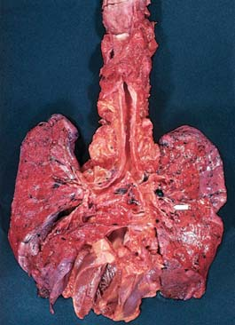
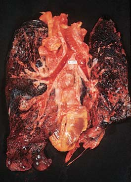
1010 Capítulo 46
5 Resumir los mecanismos por los cuales el oxígeno y el bióxido de carbono son transportados en la sangre e identifi car los factores que determinan la curva de disociación de oxígeno-hemoglobina.
■ La hemoglobina es el pigmento respiratorio en la sangre de los vertebrados. Casi 99% del oxígeno en el cuerpo humano es transportado como oxihemoglobina (HbO 2 ) .
■ La máxima cantidad de oxígeno que puede transportar la hemoglobina es la capacidad de carga de oxígeno . La cantidad real de oxígeno unido a la hemoglobina es el contenido de oxígeno . El porcentaje de saturación de O 2 es la razón de contenido de oxígeno a capacidad de carga de oxígeno, es máxima en las cavidades pulmonares, donde la concentración de oxígeno es mayor.
■ La curva de disociación de oxígeno-hemoglobina muestra que cuando la concentración de oxígeno aumenta, hay un incremento progresivo en la cantidad de hemoglobina que se combina con el oxígeno. La curva es afectada por el pH, la temperatura y la concentración de CO 2 .
■ La oxihemoglobina se disocia más rápido a medida que aumenta la concentración de bióxido de carbono porque éste se combina con agua y produce ácido carbónico, que disminuye el pH. El desplazamiento de la curva de disociación de oxígeno-hemoglobina por un cambio en el pH se denomina efecto Bohr .
■ Alrededor de 60% del bióxido de carbono en la sangre es transportado como iones de bicarbonato. Aproximadamente 30% se combina con la hemoglobina y otro 10% se disuelve en el plasma.
■ La anhidrasa carbónica cataliza la producción de ácido carbónico a partir de bióxido de carbono y agua. El ácido carbónico se disocia, produciendo iones de bicarbonato (HCO 3 – ) y iones de hidrógeno (H + ).
■ La hemoglobina se combina con H + , que amortigua el pH de la sangre. Muchos iones de bicarbonato se difunden de los glóbulos rojos al plasma; son remplazados por Cl – . Este intercambio se denomina desplazamiento de cloruro . 6 Describir la regulación de la respiración en humanos y resumir los efectos fi siológicos de la hiperventilación y la descompresión repentina cuando un buzo asciende a la superfi cie demasiado rápido desde aguas profundas.
■ Los centros respiratorios en la médula y el puente de Varolio regulan la respiración. Estos centros son estimulados por quimiorreceptores sensibles a un incremento de concentración del bióxido de carbono. También responden a un incremento en los iones de hidrógeno y a una muy baja concentración de oxígeno.
■ La hiperventilación reduce la concentración de bióxido de carbono en el aire alveolar y en la sangre.
■ A medida que aumenta la altitud, la presión barométrica baja y menos oxígeno entra en la sangre. Esta situación puede conducir a hipoxia , o defi ciencia de oxígeno, que a su vez puede llevar a la pérdida de la conciencia y la muerte. Un rápido descenso en la presión barométrica también puede provocar enfermedad por descompresión , especialmente común entre buzos que ascienden demasiado rápido después de una inmersión.
■ Los mamíferos que bucean tienen altas concentraciones de mioglobina , un pigmento que almacena oxígeno, en los músculos. El refl ejo de buceo , un grupo de mecanismos fi siológicos, que incluye una disminución en la tasa metabólica, es activado cuando un mamífero bucea hasta su límite.
46.4 (página 1007)
7 Describir los mecanismos de defensa que protegen a los pulmones y explicar los efectos del aire contaminado y del hábito de fumar sobre el sistema respiratorio.
■ La mucosa ciliada que reviste las vías respiratorias atrapa partículas inhaladas. Inhalar aire contaminado resulta en constricción bronquial , un incremento en la secreción de moco, daño en las células ciliadas y tos. Respirar aire contaminado o inhalar el humo del cigarro puede ocasionar muchas enfermedades, incluidos bronquitis crónica , enfi sema pulmonar y cáncer de pulmón .
46.3 (página 998)
3 Seguir el paso del oxígeno a través del sistema respiratorio humano desde las fosas nasales hasta los alveolos.
■ El sistema respiratorio humano incluye los pulmones y un sistema de vías respiratorias. Cada bocanada de aire pasa en secuencia por las fosas nasales , las cavidades nasales , la faringe , la laringe , la tráquea , los bronquios , los bronquiolos y los alveolos . Cada pulmón ocupa una cavidad pleural y está cubierto por una membrana pleural .
Bronquiolo Alveolo
Capilares
Alveolo
Alveolo
Aprenda más sobre el sistema respiratorio humano al hacer clic en las fi guras en CengageNOW .
4 Resumir los mecanismos de la respiración en humanos, y describir el intercambio de gases en los pulmones y tejidos.
■ Durante la respiración, el diafragma se contrae, expandiendo la cavidad torácica. Las paredes membranosas de los pulmones se mueven hacia fuera junto con las paredes del tórax, disminuyendo la presión dentro de los pulmones. El aire exterior al cuerpo penetra por las vías respiratorias y llena los pulmones hasta que la presión es igual a la presión atmosférica.
■ El volumen corriente es la cantidad de aire movido hacia dentro y hacia fuera de los pulmones con cada respiración normal. El volumen de aire que permanece en los pulmones al fi nal de la expiración máxima es el volumen residual . La capacidad vital es el volumen máximo de aire que puede exhalarse después de que los pulmones se llenan a su máxima extensión.
■ El oxígeno y el bióxido de carbono se intercambian entre los alveolos y la sangre por difusión. La presión de un gas particular determina su dirección y tasa de difusión.
■ La ley de Dalton de las presiones parciales explica que en una mezcla de gases la presión total de la mezcla es igual a la suma de las presiones de los gases individuales. Por tanto, cada gas en una mezcla ejerce una presión parcial, la misma que ejercería si sólo él estuviese presente. La presión parcial del oxígeno atmosférico, P O 2 , es 160 mm Hg a nivel del mar.
■ Según la ley de difusión de Fick , mientras más grande sea la diferencia de presión en los dos lados de una membrana y más grande sea el área superfi cial, más pronto se difundirá el gas a través de la membrana.
Vea los mecanismos de respiración en acción al hacer clic en las fi guras en CengageNOW .
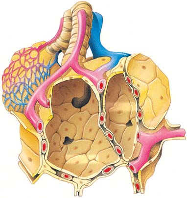
Intercambio de gases 1011
EVALÚE SU COMPRENSIÓN
¿Cuál de los siguientes es un benefi cio del intercambio de gases en aire comparado con el intercambio de gases en agua? (a) el aire tiene una mayor concentración de oxígeno molecular (b) el oxígeno se difunde más lentamente en el aire (c) no se requiere energía para la ventilación (d) no se requiere una superfi cie respiratoria húmeda (e) el aire es más denso que el agua
¿Cuál de las siguientes parejas coincide precisamente? (a) pez óseoopérculo (b) insecto-alveolo (c) ave-espiráculos (d) mamífero acuático-fi lamentos bronquiales (e) tiburón-branquias dérmicas
Los tubos traqueales (tráqueas) (a) están relacionados con el sistema circulatorio (b) son altamente vasculares (c) se ramifi can y extienden a todas las células (d) son característicos de muchos vertebrados (e) a, b y c
El sistema respiratorio de los vertebrados más efi caz es el de: (a) los anfi bios (b) las aves (c) los reptiles (d) los mamíferos (e) los humanos
En un ave, la secuencia correcta para la respiración de aire es 1. sacos de aire anteriores 2. sacos de aire posteriores 3. parabronquios 4. alveolos (a) 1, 2, 4 (b) 2, 1, 3 (c) 2, 3, 1 (d) 2, 4, 1 (e) 1, 3, 2
¿Cuál serie describe con más precisión la secuencia del fl ujo de aire en el sistema respiratorio humano? 1. faringe 2. bronquio 3. tráquea 4. laringe 5. alveolo 6. bronquiolo (a) 4, 1, 3, 2, 5, 6 (b) 1, 4, 3, 2, 5, 6 (c) 4, 1, 3, 2, 6, 5 (d) 1, 4, 3, 2, 6, 5 (e) 1, 3, 4, 2, 6, 5
La cantidad de aire que se mueve hacia dentro y hacia fuera de los pulmones con cada respiración en reposo es (a) la capacidad vital (b) el volumen residual (c) el volumen vital (d) la presión parcial (e) el volumen corriente
Según la ley de difusión de Fick, un gas se difunde más rápido si (a) se reduce la superfi cie (b) se disminuye la diferencia en presión (c) se aumenta la diferencia en presión (d) se reduce el pH (e) a y c
¿La concentración de cuál de las siguientes sustancias es más importante para regular la frecuencia respiratoria? (a) iones de cloruro (b) oxígeno (c) iones de bicarbonato (d) nitrógeno (e) bióxido de carbono
Cuando un buzo asciende demasiado rápido, (a) ocurre constricción branquial (b) se activa un refl ejo de buceo (c) el nitrógeno sale rápidamente como burbujas de la disolución en los fl uidos del cuerpo (d) ocurre hipoxia por nitrógeno (e) las burbujas de bióxido de carbono dañan los alveolos
¿Cuál de las siguientes afi rmaciones no es verdadera sobre el refl ejo de buceo? (a) se detiene la respiración (b) el corazón aminora su ritmo (c) se distribuye menos sangre a los músculos (d) la tasa metabólica aumenta aproximadamente 20% (e) disminuye el consumo de energía
Rotule la fi gura. Use la fi gura 46-6 para comprobar sus respuestas.
PENSAMIENTO CRÍTICO
¿Qué problemas enfrentaría un animal terrestre que tuviera branquias en vez de pulmones?
VÍNCULO CON LA EVOLUCIÓN. ¿En qué condiciones podría ser ventajoso para un pez tener pulmones y branquias? ¿Para qué sirven los “pulmones” de los peces modernos?
VÍNCULO CON LA EVOLUCIÓN. Los mamíferos marinos como las ballenas y los delfi nes usan pulmones en vez de branquias para el intercambio de gases. Proponga una hipótesis que explique este hecho.
VÍNCULO CON LA EVOLUCIÓN. ¿Cuáles son las ventajas de tener millones de alveolos en lugar de un simple par de pulmones en forma de globo?
ANÁLISIS DE DATOS. Observe la fi gura 46-10b. ¿Cómo podría una actividad intensa de los músculos afectar la curva de disociación
de oxígeno-hemoglobina? ( Sugerencia : ¿cómo afecta la actividad muscular el pH? Consulte el capítulo 40 si necesita revisar este concepto.) ¿Cuál sería la ventaja del desplazamiento en la curva?
- CIENCIA, TECNOLOGÍA Y SOCIEDAD. ¿Cómo resolvería el problema de fumar tabaco, que es extremadamente oneroso para la sociedad en costos económicos y de salud, así como en sufrimiento humano?
Preguntas adicionales están disponibles en CengageNOW en www.cengage.com/login.
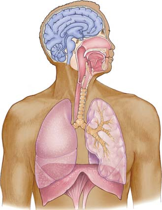